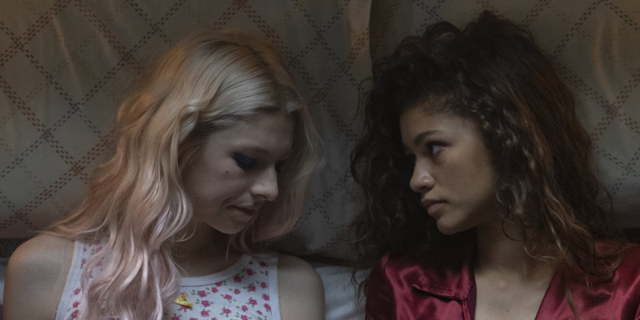

Euphoria của HBO gây tranh cãi vì quá nhiều cảnh tình dục ở thiếu niên
 Ha Quoc Viet
Ha Quoc Viet

Series Euphoria của đài HBO đã ngay lập tức gây ra nhiều tranh cãi, dù mới chỉ phát sóng tập đầu tiên ngày 16/6 vừa qua, do chứa quá nhiều yếu tố bạo lực và tình dục.
Trước khi đến với khán giả, series này đã được giới phê bình xem trước một số tập, và được đánh giá không mấy tích cực với tràn ngập các cảnh nóng được thể hiện một cách trần trụi. Cụ thể, ở tập đầu tiên là cảnh một người đàn ông cưỡng hiếp cô gái chuyển giới 17 tuổi, còn ở tập sau là hơn 30 lần bộ phận nhạy cảm của nam giới xuất hiện, cùng đầy rẫy các cảnh sử dụng chất kích thích, rượu bia.

Điều đáng nói hơn, dù gắn nhãn TV-MA (tương đương 18+ trên truyền hình), thì đây vẫn là bộ phim dễ dàng tiếp cận bởi thiếu niên, những người cực kỳ dễ bị ảnh hưởng bởi những hành vi tiêu cực. Chia sẻ với Fox News, Parents Television Council, hội đồng chuyên đánh giá tầm ảnh hưởng của truyền hình với trẻ em, đã lên tiếng chỉ trích series này của HBO, rằng nhà sản xuất đã cố tình lợi dụng các yếu tố bạo lực, tình dục, tệ nạn xã hội để thực hiện mục đích marketing của mình. Người đứng đầu hội đồng, Tim Winter còn bày tỏ quan ngại, khi HBO đã cố ý bình thường hoá các yếu tố cực đoan này, gây ảnh hưởng đến suy nghĩ của thanh thiếu niên.
Đáp trả lại, đại diện của HBO chia sẻ với tờ The Hollywood Reporter, rằng hãng không hề cố ý câu khách bằng các yếu tố nhạy cảm: “Những cảnh nhạy cảm cùng ý tưởng đưa nó lên truyền hình nghe có vẻ đi quá giới hạn. Tuy nhiên, đây là trải nghiệm có thật của nhiều người. Phim hướng đến khán giả người lớn, cho họ thấy những vấn đề của thế hệ trẻ hiện nay”. Đồng thời, hãng cũng cho biết sẽ tiến hành cắt gọt lại khi Euphoria được phát trên sóng truyền hình.
Ngoài ra, HBO cũng giữ im lặng trước nghi vấn không cảnh báo trước cho diễn viên về mức độ nhạy cảm của các cảnh quay. Đặc biệt là trường hợp của nam diễn viên 22 tuổi Brian Bradley quyết định rời dự án sau khi phải quay một đoạn không có trong kịch bản gốc, liên quan tới việc “thử nghiệm đồng tính" trong các tập tiếp theo. Tuy nhiên, một số diễn viên khác cũng cho biết họ được quyền lựa chọn mức độ của từng cảnh quay, đồng thời ekip cũng có những phương án bảo vệ diễn viên nhất định.
Sau những tranh cãi xoay quanh các yếu tố nhạy cảm, mới đây, Zendaya, diễn viên chính của Euphoria đã lên tiếng trên
Instagram: “Xin hãy nhớ rằng đây là bộ phim dành cho người lớn. Đó là câu chuyện thực tế và trần trụi về sự nghiện ngập, những lo lắng, và cả sự khó khăn khi điều chỉnh cuộc sống hiện đại. Có những cảnh trong phim không hề dễ xem và có thể gây khó chịu. Xin hãy chỉ xem nó khi bạn thực sự sẵn sàng.”
Euphoria là một trong những dự án trọng điểm trong năm 2019 của HBO sau khi Game of Thrones kết thúc. Phim kể về hành trình cai nghiện của nữ sinh 17 tuổi Rue Bennett, khi cô chán nản và kết bạn với những người cũng gặp phải nhiều vấn đề tiêu cực trong cuộc sống. Ngoại trừ những yếu tố gây tranh cãi ở trên, phim cũng được đánh giá khá cao về mặt nội dung cũng như diễn xuất của nhân vật chính.